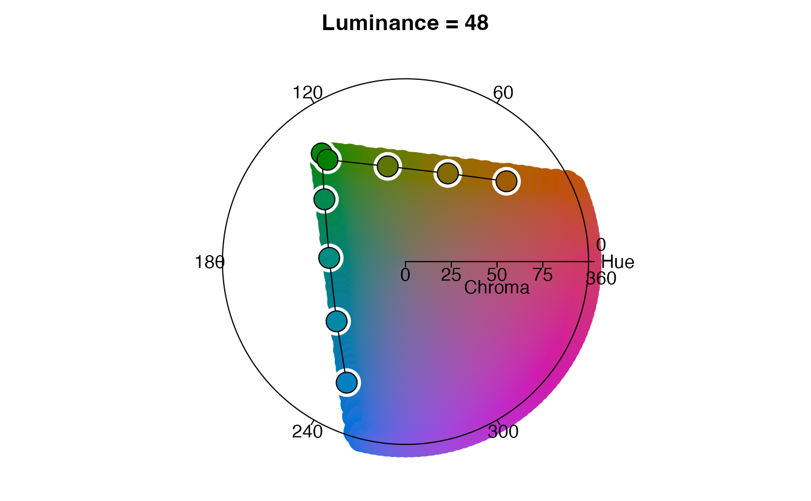

R/palette.R
palette_timeline.RdThis function generates an HCL palette for visualizing a linear sequence of distributions. For example, a series of utilization distributions describing space use by an individual animal across each of 20 consecutive days or a series of species distributions describing projected responses to global warming in 0.5 C increments.
palette_timeline(x, start_hue = -130, clockwise = FALSE)
| x | RasterStack or integer describing the number of layers for which colors need to be generated. |
|---|---|
| start_hue | integer between -360 and 360 representing the starting hue in the color wheel. For further details, consult the documentation for colorspace::rainbow_hcl. Recommended values are -130 ("blue-pink-yellow" palette) and 50 ("yellow-green-blue" palette). |
| clockwise | logical indicating which direction to move around an HCL
color wheel. When |
A data frame with three columns:
layer_id: integer identifying the layer containing the maximum
intensity value; mapped to hue.
specificity: the degree to which intensity values are unevenly
distributed across layers; mapped to chroma.
color: the hexadecimal color associated with the given layer and
specificity values.
palette_timecycle for cyclical sequences of distributions and palette_groups for unordered sets of distributions.
Other palette:
palette_groups(),
palette_timecycle()
# load fisher data data(fisher_ud) # generate hcl color palette pal_a <- palette_timeline(fisher_ud) head(pal_a)#> specificity layer_id color #> 1 0 1 #6A6A6A #> 2 0 2 #6A6A6A #> 3 0 3 #6A6A6A #> 4 0 4 #6A6A6A #> 5 0 5 #6A6A6A #> 6 0 6 #6A6A6A# use a clockwise palette pal_b <- palette_timeline(fisher_ud, clockwise = TRUE) # try a different starting hue pal_c <- palette_timeline(fisher_ud, start = 50) # visualize the palette in HCL space with colorspace::hclplot library(colorspace) hclplot(pal_a[pal_a$specificity == 100, ]$color)